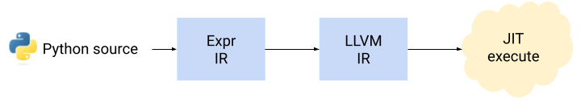

Spend enough time looking at Python programs and packages for machine learning, and you'll notice that the "JIT decorator" pattern is pretty popular. For example, this JAX snippet:
import jax.numpy as jnp
import jax
@jax.jit
def add(a, b):
return jnp.add(a, b)
# Use "add" as a regular Python function
... = add(...)
Or the Triton language for writing GPU kernels directly in Python:
import triton
import triton.language as tl
@triton.jit
def add_kernel(x_ptr,
y_ptr,
output_ptr,
n_elements,
BLOCK_SIZE: tl.constexpr):
pid = tl.program_id(axis=0)
block_start = pid * BLOCK_SIZE
offsets = block_start + tl.arange(0, BLOCK_SIZE)
mask = offsets < n_elements
x = tl.load(x_ptr + offsets, mask=mask)
y = tl.load(y_ptr + offsets, mask=mask)
output = x + y
tl.store(output_ptr + offsets, output, mask=mask)
In both cases, the function decorated with jit doesn't get executed by the Python interpreter in the normal sense. Instead, the code inside is more like a DSL (Domain Specific Language) processed by a special purpose compiler built into the library (JAX or Triton). Another way to think about it is that Python is used as a meta language to describe computations.
In this post I will describe some implementation strategies used by libraries to make this possible.
Preface - where we're going
The goal is to explain how different kinds of jit decorators work by using a simplified, educational example that implements several approaches from scratch. All the approaches featured in this post will be using this flow:
These are the steps that happen when a Python function wrapped with our educational jit decorator is called:
- The function is translated to an "expression IR" - Expr.
- This expression IR is converted to LLVM IR.
- Finally, the LLVM IR is JIT-executed.
Steps (2) and (3) use llvmlite; I've written about llvmlite before, see this post and also the pykaleidoscope project. For an introduction to JIT compilation, be sure to read this and maybe also the series of posts starting here.
First, let's look at the Expr IR. Here we'll make a big simplification - only supporting functions that define a single expression, e.g.:
def expr2(a, b, c, d):
return (a + d) * (10 - c) + b + d / c
Naturally, this can be easily generalized - after all, LLVM IR can be used to express fully general computations.
Here are the Expr data structures:
class Expr:
pass
@dataclass
class ConstantExpr(Expr):
value: float
@dataclass
class VarExpr(Expr):
name: str
arg_idx: int
class Op(Enum):
ADD = "+"
SUB = "-"
MUL = "*"
DIV = "/"
@dataclass
class BinOpExpr(Expr):
left: Expr
right: Expr
op: Op
To convert an Expr into LLVM IR and JIT-execute it, we'll use this function:
def llvm_jit_evaluate(expr: Expr, *args: float) -> float:
"""Use LLVM JIT to evaluate the given expression with *args.
expr is an instance of Expr. *args are the arguments to the expression, each
a float. The arguments must match the arguments the expression expects.
Returns the result of evaluating the expression.
"""
llvm.initialize()
llvm.initialize_native_target()
llvm.initialize_native_asmprinter()
llvm.initialize_native_asmparser()
cg = _LLVMCodeGenerator()
modref = llvm.parse_assembly(str(cg.codegen(expr, len(args))))
target = llvm.Target.from_default_triple()
target_machine = target.create_target_machine()
with llvm.create_mcjit_compiler(modref, target_machine) as ee:
ee.finalize_object()
cfptr = ee.get_function_address("func")
cfunc = CFUNCTYPE(c_double, *([c_double] * len(args)))(cfptr)
return cfunc(*args)
It uses the _LLVMCodeGenerator class to actually generate LLVM IR from Expr. This process is straightforward and covered extensively in the resources I linked to earlier; take a look at the full code here.
My goal with this architecture is to make things simple, but not too simple. On one hand - there are several simplifications: only single expressions are supported, very limited set of operators, etc. It's very easy to extend this! On the other hand, we could have just trivially evaluated the Expr without resorting to LLVM IR; I do want to show a more complete compilation pipeline, though, to demonstrate that an arbitrary amount of complexity can be hidden behind these simple interfaces.
With these building blocks in hand, we can review the strategies used by jit decorators to convert Python functions into Exprs.
AST-based JIT
Python comes with powerful code reflection and introspection capabilities out of the box. Here's the astjit decorator:
def astjit(func):
@functools.wraps(func)
def wrapper(*args, **kwargs):
if kwargs:
raise ASTJITError("Keyword arguments are not supported")
source = inspect.getsource(func)
tree = ast.parse(source)
emitter = _ExprCodeEmitter()
emitter.visit(tree)
return llvm_jit_evaluate(emitter.return_expr, *args)
return wrapper
This is a standard Python decorator. It takes a function and returns another function that will be used in its place (functools.wraps ensures that function attributes like the name and docstring of the wrapper match the wrapped function).
Here's how it's used:
from astjit import astjit
@astjit
def some_expr(a, b, c):
return b / (a + 2) - c * (b - a)
print(some_expr(2, 16, 3))
After astjit is applied to some_expr, what some_expr holds is the wrapper. When some_expr(2, 16, 3) is called, the wrapper is invoked with *args = [2, 16, 3].
The wrapper obtains the AST of the wrapped function, and then uses _ExprCodeEmitter to convert this AST into an Expr:
class _ExprCodeEmitter(ast.NodeVisitor):
def __init__(self):
self.args = []
self.return_expr = None
self.op_map = {
ast.Add: Op.ADD,
ast.Sub: Op.SUB,
ast.Mult: Op.MUL,
ast.Div: Op.DIV,
}
def visit_FunctionDef(self, node):
self.args = [arg.arg for arg in node.args.args]
if len(node.body) != 1 or not isinstance(node.body[0], ast.Return):
raise ASTJITError("Function must consist of a single return statement")
self.visit(node.body[0])
def visit_Return(self, node):
self.return_expr = self.visit(node.value)
def visit_Name(self, node):
try:
idx = self.args.index(node.id)
except ValueError:
raise ASTJITError(f"Unknown variable {node.id}")
return VarExpr(node.id, idx)
def visit_Constant(self, node):
return ConstantExpr(node.value)
def visit_BinOp(self, node):
left = self.visit(node.left)
right = self.visit(node.right)
try:
op = self.op_map[type(node.op)]
return BinOpExpr(left, right, op)
except KeyError:
raise ASTJITError(f"Unsupported operator {node.op}")
When _ExprCodeEmitter finishes visiting the AST it's given, its return_expr field will contain the Expr representing the function's return value. The wrapper then invokes llvm_jit_evaluate with this Expr.
Note how our decorator interjects into the regular Python execution process. When some_expr is called, instead of the standard Python compilation and execution process (code is compiled into bytecode, which is then executed by the VM), we translate its code to our own representation and emit LLVM from it, and then JIT execute the LLVM IR. While it seems kinda pointless in this artificial example, in reality this means we can execute the function's code in any way we like.
AST JIT case study: Triton
This approach is almost exactly how the Triton language works. The body of a function decorated with @triton.jit gets parsed to a Python AST, which then - through a series of internal IRs - ends up in LLVM IR; this in turn is lowered to PTX by the NVPTX LLVM backend. Then, the code runs on a GPU using a standard CUDA pipeline.
Naturally, the subset of Python that can be compiled down to a GPU is limited; but it's sufficient to run performant kernels, in a language that's much friendlier than CUDA and - more importantly - lives in the same file with the "host" part written in regular Python. For example, if you want testing and debugging, you can run Triton in "interpreter mode" which will just run the same kernels locally on a CPU.
Note that Triton lets us import names from the triton.language package and use them inside kernels; these serve as the intrinsics for the language - special calls the compiler handles directly.
Bytecode-based JIT
Python is a fairly complicated language with a lot of features. Therefore, if our JIT has to support some large portion of Python semantics, it may make sense to leverage more of Python's own compiler. Concretely, we can have it compile the wrapped function all the way to bytecode, and start our translation from there.
Here's the bytecodejit decorator that does just this [1]:
def bytecodejit(func):
@functools.wraps(func)
def wrapper(*args, **kwargs):
if kwargs:
raise BytecodeJITError("Keyword arguments are not supported")
expr = _emit_exprcode(func)
return llvm_jit_evaluate(expr, *args)
return wrapper
def _emit_exprcode(func):
bc = func.__code__
stack = []
for inst in dis.get_instructions(func):
match inst.opname:
case "LOAD_FAST":
idx = inst.arg
stack.append(VarExpr(bc.co_varnames[idx], idx))
case "LOAD_CONST":
stack.append(ConstantExpr(inst.argval))
case "BINARY_OP":
right = stack.pop()
left = stack.pop()
match inst.argrepr:
case "+":
stack.append(BinOpExpr(left, right, Op.ADD))
case "-":
stack.append(BinOpExpr(left, right, Op.SUB))
case "*":
stack.append(BinOpExpr(left, right, Op.MUL))
case "/":
stack.append(BinOpExpr(left, right, Op.DIV))
case _:
raise BytecodeJITError(f"Unsupported operator {inst.argval}")
case "RETURN_VALUE":
if len(stack) != 1:
raise BytecodeJITError("Invalid stack state")
return stack.pop()
case "RESUME" | "CACHE":
# Skip nops
pass
case _:
raise BytecodeJITError(f"Unsupported opcode {inst.opname}")
The Python VM is a stack machine; so we emulate a stack to convert the function's bytecode to Expr IR (a bit like an RPN evaluator). As before, we then use our llvm_jit_evaluate utility function to lower Expr to LLVM IR and JIT execute it.
Using this JIT is as simple as the previous one - just swap astjit for bytecodejit:
from bytecodejit import bytecodejit
@bytecodejit
def some_expr(a, b, c):
return b / (a + 2) - c * (b - a)
print(some_expr(2, 16, 3))
Bytecode JIT case study: Numba
Numba is a compiler for Python itself. The idea is that you can speed up specific functions in your code by slapping a numba.njit decorator on them. What happens next is similar in spirit to our simple bytecodejit, but of course much more complicated because it supports a very large portion of Python semantics.
Numba uses the Python compiler to emit bytecode, just as we did; it then converts it into its own IR, and then to LLVM using llvmlite [2].
By starting with the bytecode, Numba makes its life easier (no need to rewrite the entire Python compiler). On the other hand, it also makes some analyses harder, because by the time we're in bytecode, a lot of semantic information existing in higher-level representations is lost. For example, Numba has to sweat a bit to recover control flow information from the bytecode (by running it through a special interpreter first).
Tracing-based JIT
The two approaches we've seen so far are similar in many ways - both rely on Python's introspection capabilities to compile the source code of the JIT-ed function to some extent (one to AST, the other all the way to bytecode), and then work on this lowered representation.
The tracing strategy is very different. It doesn't analyze the source code of the wrapped function at all - instead, it traces its execution by means of specially-boxed arguments, leveraging overloaded operators and functions, and then works on the generated trace.
The code implementing this for our smile demo is surprisingly compact:
def tracejit(func):
@functools.wraps(func)
def wrapper(*args, **kwargs):
if kwargs:
raise TraceJITError("Keyword arguments are not supported")
argspec = inspect.getfullargspec(func)
argboxes = []
for i, arg in enumerate(args):
if i >= len(argspec.args):
raise TraceJITError("Too many arguments")
argboxes.append(_Box(VarExpr(argspec.args[i], i)))
out_box = func(*argboxes)
return llvm_jit_evaluate(out_box.expr, *args)
return wrapper
Each runtime argument of the wrapped function is assigned a VarExpr, and that is placed in a _Box, a placeholder class which lets us do operator overloading:
@dataclass
class _Box:
expr: Expr
_Box.__add__ = _Box.__radd__ = _register_binary_op(Op.ADD)
_Box.__sub__ = _register_binary_op(Op.SUB)
_Box.__rsub__ = _register_binary_op(Op.SUB, reverse=True)
_Box.__mul__ = _Box.__rmul__ = _register_binary_op(Op.MUL)
_Box.__truediv__ = _register_binary_op(Op.DIV)
_Box.__rtruediv__ = _register_binary_op(Op.DIV, reverse=True)
The remaining key function is _register_binary_op:
def _register_binary_op(opcode, reverse=False):
"""Registers a binary opcode for Boxes.
If reverse is True, the operation is registered as arg2 <op> arg1,
instead of arg1 <op> arg2.
"""
def _op(arg1, arg2):
if reverse:
arg1, arg2 = arg2, arg1
box1 = arg1 if isinstance(arg1, _Box) else _Box(ConstantExpr(arg1))
box2 = arg2 if isinstance(arg2, _Box) else _Box(ConstantExpr(arg2))
return _Box(BinOpExpr(box1.expr, box2.expr, opcode))
return _op
To understand how this works, consider this trivial example:
@tracejit
def add(a, b):
return a + b
print(add(1, 2))
After the decorated function is defined, add holds the wrapper function defined inside tracejit. When add(1, 2) is called, the wrapper runs:
- For each argument of add itself (that is a and b), it creates a new _Box holding a VarExpr. This denotes a named variable in the Expr IR.
- It then calls the wrapped function, passing it the boxes as runtime parameters.
- When (the wrapped) add runs, it invokes a + b. This is caught by the overloaded __add__ operator of _Box, and it creates a new BinOpExpr with the VarExprs representing a and b as children. This BinOpExpr is then returned [3].
- The wrapper unboxes the returned Expr and passes it to llvm_jit_evaluate to emit LLVM IR from it and JIT execute it with the actual runtime arguments of the call: 1, 2.
This might be a little mind-bending at first, because there are two different executions that happen:
- The first is calling the wrapped add function itself, letting the Python interpreter run it as usual, but with special arguments that build up the IR instead of doing any computations. This is the tracing step.
- The second is lowering this IR our tracing step built into LLVM IR and then JIT executing it with the actual runtime argument values 1, 2; this is the execution step.
This tracing approach has some interesting characteristics. Since we don't have to analyze the source of the wrapped functions but only trace through the execution, we can "magically" support a much richer set of programs, e.g.:
@tracejit
def use_locals(a, b, c):
x = a + 2
y = b - a
z = c * x
return y / x - z
print(use_locals(2, 8, 11))
This just works with our basic tracejit. Since Python variables are placeholders (references) for values, our tracing step is oblivious to them - it follows the flow of values. Another example:
@tracejit
def use_loop(a, b, c):
result = 0
for i in range(1, 11):
result += i
return result + b * c
print(use_loop(10, 2, 3))
This also just works! The created Expr will be a long chain of BinExpr additions of i's runtime values through the loop, added to the BinExpr for b * c.
This last example also leads us to a limitation of the tracing approach; the loop cannot be data-dependent - it cannot depend on the function's arguments, because the tracing step has no concept of runtime values and wouldn't know how many iterations to run through; or at least, it doesn't know this unless we want to perform the tracing run for every runtime execution [4].
The tracing approach is useful in several domains, most notably automatic differentiation (AD). For a slightly deeper taste, check out my radgrad project.
Tracing JIT case study: JAX
The JAX ML framework uses a tracing approach very similar to the one described here. The first code sample in this post shows the JAX notation. JAX cleverly wraps Numpy with its own version which is traced (similar to our _Box, but JAX calls these boxes "tracers"), letting you write regular-feeling Numpy code that can be JIT optimized and executed on accelerators like GPUs and TPUs via XLA. JAX's tracer builds up an underlying IR (called jaxpr) which can then be emitted to XLA ops and passed to XLA for further lowering and execution.
For a fairly deep overview of how JAX works, I recommend reading the autodidax doc.
As mentioned earlier, JAX has some limitations with things like data-dependent control flow in native Python. This won't work, because there's control flow that depends on a runtime value (count):
import jax
@jax.jit
def sum_datadep(a, b, count):
total = a
for i in range(count):
total += b
return total
print(sum_datadep(10, 3, 3))
When sum_datadep is executed, JAX will throw an exception, saying something like:
This concrete value was not available in Python because it depends on the value of the argument count.
As a remedy, JAX has its own built-in intrinsics from the jax.lax package. Here's the example rewritten in a way that actually works:
import jax
from jax import lax
@jax.jit
def sum_datadep_fori(a, b, count):
def body(i, total):
return total + b
return lax.fori_loop(0, count, body, a)
fori_loop (and many other built-ins in the lax package) is something JAX can trace through, generating a corresponding XLA operation (XLA has support for While loops, to which this lax.fori_loop can be lowered).
The tracing approach has clear benefits for JAX as well; because it only cares about the flow of values, it can handle arbitrarily complicated Python code, as long as the flow of values can be traced. Just like the local variables and data-independent loops shown earlier, but also things like closures. This makes meta-programming and templating easy [5].
Code
The full code for this post is available on GitHub.
| [1] | Once again, this is a very simplified example. A more realistic translator would have to support many, many more Python bytecode instructions. |
| [2] | In fact, llvmlite itself is a Numba sub-project and is maintained by the Numba team, for which I'm grateful! |
| [3] | For a fun exercise, try adding constant folding to the wrapped _op: when both its arguments are constants (not boxes), instead placing each in a _Box(ConstantExpr(...)), it could perform the mathematical operation on them and return a single constant box. This is a common optimization in compilers! |
| [4] | In all the JIT approaches showed in this post, the expectation is that compilation happens once, but the compiled function can be executed many times (perhaps in a loop). This means that the compilation step cannot depend on the runtime values of the function's arguments, because it has no access to them. You could say that it does, but that's just for the very first time the function is run (in the tracing approach); it has no way of knowing their values the next times the function will run. JAX has some provisions for cases where a function is invoked with a small set of runtime values and we want to separately JIT each of them. |
| [5] | A reader pointed out that TensorFlow's AutoGraph feature combines the AST and tracing approaches. TF's eager mode performs tracing, but it also uses AST analyses to rewrite Python loops and conditions into builtins like tf.cond and tf.while_loop. |